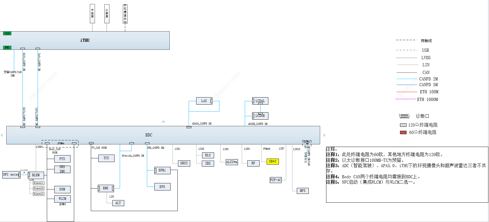
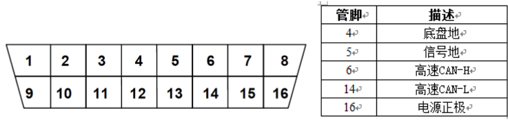

CAN 是Controller Area Network 的缩写，全称是控制器局域网络总线，即控制设备相互连接，进行数据交换。
动力PCAN总线终端的120Ω的电阻布置在发动机管理单元(EMS)和车身域控制器内（BDC）；底盘CHSCANFD总线终端的120Ω的电阻布置在智能车身控制器内（BDC）和电子集成手刹（EPBi）；车身BCAN总线终端的120Ω的电阻两个都布置智能车身控制器内（BDC）；娱乐INFO CANFD总线终端的120Ω的电阻布置在车载娱乐基础终端（iTHU）和智能车身控制器内（BDC）；数据DATACANFD总线终端的120Ω的电阻布置在车载娱乐基础终端（iTHU）和智能车身控制器内（BDC）内；驾驶ADASA CANFD总线终端的120Ω的电阻布置在智能车身控制器内（BDC)和车道辅助系统（LAS）；驾驶ADASB CANFD总线终端的120Ω的电阻布置在左后角雷达（LCDAL)和左后角雷达（LCDAR)系统;新能源HybridCAN总线终端的120Ω的电阻布置在发动机管理单元(EMS)和车身域控制器内（BDC）。
动力PCAN上具有诊断功能的节点包括动机管理单元(EMS)、变速器控制单元（TCU）和智能车身控制器内（BDC）
底盘CHS CANFD总线具有诊断功能的节点包括电子助力转向（EPS），电子集成手刹（EPBi）和智能车身控制器内（BDC）
车身BCAN上具有诊断功能节点包括智能车身控制模块（BDC）、主驾座椅模块（DSM）、汽车背门控制器（PTS）、无线充电控制器（WLCM,）、NFC钥匙（NFC）、后排座椅模块（RDSM）、安全气囊控制器模块（SRS）。
娱乐INFO CANFD上具有诊断功能节点车载娱乐基础终端（iTHU）（注：集成TBOX，全景影像控制器AVM，IP）、智能车身控制器内（BDC）。
数据DATACANFD总线具有诊断功能节点数据CANFD上具有诊断功能节点车载娱乐基础终端（iTHU）和智能车身控制器内（BDC）
驾驶ADASA CANFD总线具有诊断功能节点车道辅助系统（LAS）、智能车身控制器内（BDC）
驾驶ADASB CANFD总线具有诊断功能节点左后角雷达系统（LCDAL）、左后角雷达（LCDAR)系统、智能车身控制器内（BDC）
诊断口定义如下：
